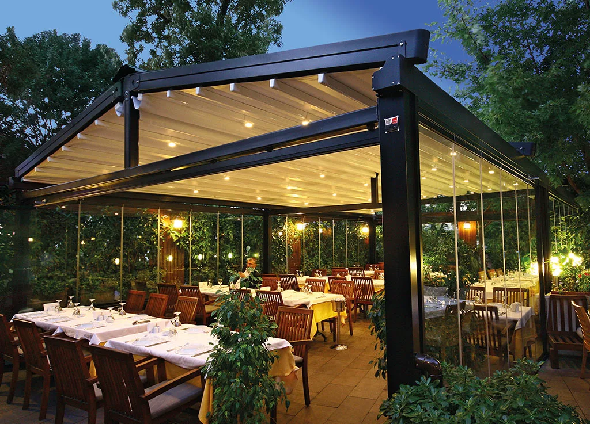

Tente
Sistemleri
Yaşam ve çalışma alanlarına konfor katan, estetik ve işlevsel gölgelendirme çözümleri.
Gölgeyi mekâna
uyarlıyoruz.
Evlerden işletmelere, bahçelerden teraslara kadar her alan için ölçüsüne ve kullanım biçimine uygun tente sistemleri tasarlıyoruz.
Manuel veya motorlu çalışma seçenekleri, dayanıklı kumaşlar ve farklı taşıyıcı sistemlerle dört mevsim kullanım hedeflenir.
Tente
galerisi.
Farklı mekân ve kullanım ihtiyaçlarına göre gerçekleştirdiğimiz uygulamalardan örnekler.
Sık sorulan
sorular.
Doğru tente sistemini seçerken öne çıkan teknik ve kullanım odaklı yanıtlar.
Hangi tente türü alanım için uygundur?
Uygun sistem; alan ölçüsü, cephe yapısı, kullanım sıklığı, rüzgâr koşulları ve manuel ya da motorlu çalışma beklentinize göre belirlenir.
Tente sistemleri özel ölçü üretilebilir mi?
Evet. Taşıyıcı sistem, kumaş, renk ve çalışma biçimi alanın ölçüsüne ve kullanım amacına göre projelendirilir.